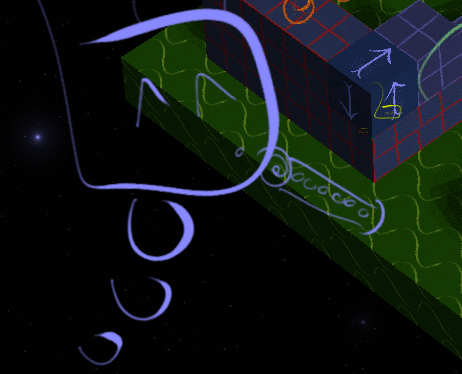

I had a blast with my Ludum Dare 38 Compo entry!
It's a short (but complete!) puzzle game with 9 levels, something of a cross between Lemmings and Minecraft. Check it out here:
Pretty rough in spots, and programmer art galore, but I'm happy with how it turned out. I'll probably revisit it in week or two, as it serves I think as a pretty solid proof of concept.
